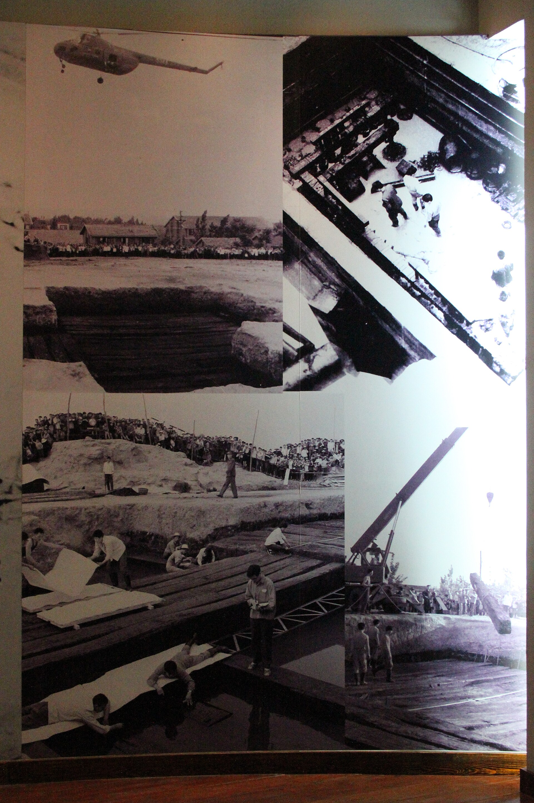

第 1 章
随枣走廊的十字路口
1978年5月，随县擂鼓墩。发掘已经进行到第十七天。考古队员揭开椁盖板的那一刻，在场的人都愣住了——泥水里躺着一座宫殿。
编钟三面悬挂，青铜礼器成组成列，漆木器叠压在一起，整座墓室不像埋死人的地方，倒像某位国君把他的朝廷原封不动搬进了地下。清理工作持续到六月，一件又一件器物被编号、绘图、提取。当第一件甬钟被翻过来的时候，有人在泥浆下面摸到了铭文。不是一两个字，是整整三行。技术员用软毛刷蘸着水一点点剔，笔画从泥里浮出来，像刀刻进骨头里一样清晰：“曾侯乙乍𠱾”。接着是第二件，第三件，第四十五件——每一件甬钟上都有这四个字。其他青铜礼器、用器及其附件共125件中，有117处“曾侯乙”的铭文。

曾侯乙墓椁室全景
图源：维基共享资源 · Gary Todd from Xinzheng, China · CC0
消息传回北京那天，考古学界震动。战国早期的诸侯墓不是没挖过，但这个规模，这个保存程度，尤其是这套编钟的完整度，超出了所有人的经验。
但震动过后，一个更棘手的问题浮上来：曾侯乙是谁？曾国在哪儿？这就是我们要讲的第一件事。不是编钟的声学原理，不是青铜器的铸造工艺，甚至不是墓主人下葬的具体年份——虽然这些都很重要。
理解曾侯乙墓，首先要回答一个问题：曾国在哪里。这个问题在1978年并不好回答。传世文献里没有曾国。《左传》没有，《国语》没有，《史记》里也没有。一个拥有一套六十五件编钟、葬制规格直逼天子的诸侯国，居然在浩如烟海的先秦典籍里消失得干干净净。
这就像你翻开民国时期的北京地图，发现某个胡同里凭空冒出一座王府——房子是真的，砖瓦是真的，但谁修的、什么时候修的、为什么没人提过，全是谜。谜底埋在地底下。1978年之前的十多年里，湖北随州一带陆续出土过带“曾”字铭文的青铜器，但因为数量少、出土地点分散，很难拼出一幅完整的图。
直到擂鼓墩大墓打开，曾国这个消失了两千四百年的诸侯国，才以最暴烈的方式撞回了历史现场。但我们还是得问：曾国在哪里？铭文回答了墓主人，没有回答地理位置。要搞清楚曾国在哪儿，得从更早的考古材料往回追。线索指向随州东北方向大约二十公里处的一片岗地——叶家山。2011年到2013年间，叶家山墓地发掘出一批西周早期的曾侯墓。
墓里出的青铜器上，铭文清清楚楚刻着“曾侯谏作宝彝”。曾侯谏，这是目前已知最早的曾国国君名字。他的墓里随葬了成套的鼎、簋、尊、卣，器形和纹饰都带着浓烈的周文化气息——兽面纹、夔龙纹、云雷纹，铸造工艺和同时期关中地区出土的器物几乎一模一样。
换句话说，这位曾侯谏不是本地土著，他是从西边来的。这就对上了。西周早期，周王室在汉水以东分封了一批姬姓诸侯，史称“汉阳诸姬”。姬姓，就是周天子的同姓宗族。
周人灭商之后，为了控制新征服的东方和南方，把宗室子弟一批批派出去建立据点，每一个据点都是一颗钉子，钉在商人旧势力和南方蛮夷的边界上。汉阳诸姬是这些钉子中最靠南的一排，曾国是这排钉子中最深入南方的一颗。它的封地落在今天湖北随州一带。打开地图看，大洪山和桐柏山像两堵墙，一左一右夹出一条南北走向的狭窄平原，最窄处不过几十公里。地理学上叫随枣走廊——北起河南南阳盆地，南接江汉平原，中间经由随州、枣阳一线贯通。
在先秦时期，这是中原进入长江中游最便捷的陆路通道。没有之一。东边是大别山，西边是荆山山脉，都是崇山峻岭，大军走不得。只有这条走廊，地势平坦，水源充足，能走车马，能运粮草。周王室把曾国放在这条走廊的南端，用意再明白不过了。
当时南方最大的威胁是楚国。楚人崛起于荆山，西周早期还只是蜷缩在丹阳一带的小邦，但扩张势头极猛，沿着长江和汉水一路向东、向北蚕食。周王室需要一道屏障，把楚人挡在汉水以南。曾国就是这道屏障的门闩。
这个判断不是推测，是有实物证据的。证据来自青铜器铭文，来自一个叫昭王的周天子。周昭王是西周的第四代君主，在位时间大约在公元前十世纪末。他在历史上留下的最大印记，就是南征。古本《竹书纪年》记载，昭王十六年伐楚荆，涉汉；十九年再次南征，丧六师于汉水，昭王本人也死在汉水之中。这段记载过去一直被当成传说看，因为细节太少，而且带着明显的道德训诫色彩——周人自己的文献里说，昭王之死是因为“德衰”，上天降罚。但青铜器铭文给出了另一个版本。
宋代出土过一件“安州六器”中的中方鼎，铭文记载了昭王南征途经曾国时，一位叫“中”的将领奉命巡视方国、传达王命。更直接的证据来自叶家山。曾侯谏墓里出的青铜器上，铭文虽然简短，但器物的组合和规格表明，这位曾侯的军事职能远高于一般诸侯。他的墓里随葬了大量兵器——戈、矛、戟、镞，数量和质量都超出同时期中原诸侯的常规配置。这不是一个只负责祭祀和收税的太平诸侯，这是一位随时准备打仗的前线指挥官。
把铭文和地理合起来看，画面就很清楚了。昭王两次南征，行军路线必走随枣走廊。大军从洛阳出发，经南阳盆地南下，进入走廊北口，沿着涢水一路向东南推进，在随州一带集结休整，然后渡过汉水进入楚地。
曾国就是这个行军链条上最关键的一环。它不仅要提供粮草、车马、人力，还要保障大军侧翼的安全——楚人擅长山地战，随时可能从大洪山或桐柏山的山谷里杀出来截断补给线。曾侯谏和他的军队，就是走廊里的守门人。那时的曾国，身份认同毫无摇摆。
它是周王室的南方前哨，曾侯是周礼在汉水流域的执行官。墓里出的器物就是最好的证明——鼎的形制严格遵循西周列鼎制度，簋的数量与爵位匹配，纹饰母题全部来自宗周传统，连铭文的字体和措辞都和关中出土的器物如出一辙。曾侯谏铸造这些礼器的时候，脑子里想的不是楚国，是镐京。他把自己看作周天子派到南方来的代理人，权力来自宗周，身份由周礼定义，敌人是楚国。
这个局面维持了大约一百多年。从西周早期到中期，汉阳诸姬像一排篱笆扎在汉水以北，楚人不断试探，始终没能突破。曾国作为最南端那根桩，日子不算太平，但至少安稳。它的国君一代代传下去，死后都葬在叶家山，墓里摆着成套的周式礼器，铭文上刻着对周天子的忠诚。
然后，天塌了。西周末年，犬戎攻破镐京，周平王东迁洛邑，中国历史进入春秋时代。周天子权威一落千丈，诸侯开始互相兼并。而南方，楚国迎来了它的黄金时代。
楚武王、楚文王、楚成王三代君主接连北上，灭国无数。首当其冲的，就是汉阳诸姬。息国，灭了。弦国，灭了。黄国，灭了。江国，灭了。一个接一个，像多米诺骨牌一样倒下去。传世文献对这段历史的记载极其简略，往往只有一句话——“楚灭某国”。但考古材料给出了更残酷的细节。那些被灭掉的诸侯国，国君墓葬突然中断，青铜器窖藏里出现了火烧和砸毁的痕迹，城池遗址的文化层在某一时期戛然而止，上面直接叠压着楚文化遗存。
唯独曾国活了下来。怎么活的？这是本章的核心问题，也是理解曾侯乙墓的第一把钥匙。
考古材料给出的答案冷冰冰的：曾国改换了门庭。证据来自随州和枣阳一带春秋中晚期的曾侯墓。枣阳郭家庙墓地，年代在春秋中期偏晚，大约公元前七世纪到六世纪之间。这里出土的曾侯墓里，器物组合开始发生变化。鼎还是鼎，簋还是簋，但器形在变——腹部变深，足变矮，耳往外撇，这些特征不是周式青铜器的传统，是楚式青铜器的风格。
纹饰也在变——细密繁复的蟠螭纹、蟠虺纹开始大量出现，取代了西周时期简洁有力的兽面纹和夔龙纹。这些新纹饰的母题，源头不在关中，在江汉。它们是从楚国青铜器上移植过来的。
更关键的变化在铭文上。西周早期的曾侯铜器，铭文措辞通常是“曾侯某作宝彝”或“曾侯某作尊彝”，简洁、庄重，遵循宗周范式。但到了春秋中晚期，铭文开始出现新的句式。随州文峰塔墓地出土的一批春秋晚期曾侯铜器上，反复出现一句话——“保其社稷”。
这四个字，放在周礼的语境下看，意味深长。西周分封制度的核心逻辑是“屏藩周室”——诸侯的责任是拱卫天子，守护宗周。诸侯的合法性来自天子的册命，职责是纳贡、朝觐、出兵。但“保其社稷”这四个字，主语变了。社稷是诸侯自己的宗庙和土地，保社稷意味着第一优先级的效忠对象从周天子转向了曾国自身。这不是一句简单的政治口号，这是一份生存宣言。它告诉所有人——也告诉曾国自己——从今往后，我们打仗不是为了镐京，是为了活下去。
与措辞变化同步发生的，是器物组合中楚文化元素比例的持续攀升。郭家庙春秋中期墓里，楚式器物大约占青铜礼器的两到三成。到了文峰塔春秋晚期墓，这个比例已经超过一半。漆器、玉器的情况也类似，楚式风格的纹饰和器形越来越多，周式传统逐渐退居次要位置。把这些线索拼在一起，一幅图景就浮现出来了。春秋中期以降，曾国经历了一次静默但彻底的身份转换。它从周王室的南方藩篱，变成了楚文化圈内的附庸贵族。这个转换不是一夜之间发生的，它经历了至少三代国君，每一步都小心翼翼，每一步都在器物和铭文上留下了痕迹。
但这里有一个容易误读的地方，必须说清楚。这个转换不是投降。投降意味着被征服、被吞并、被抹去宗庙。曾国没有被吞并。它的国君世系一直延续，宗庙一直存在，礼器一直铸造。曾国保留了君统、祭祀权和相对独立的行政体系，代价是必须在器物、仪式乃至审美上向楚国靠拢。
这不是投降，这是一种极其务实的文化策略。打个不太准确但好懂的比方。
这就像一家小公司，行业巨头已经吞掉了你周围所有的竞争对手，你的选择只有两个：要么被收购，品牌消失，团队解散；要么接受巨头的投资，保留品牌和团队，但产品线、设计风格和市场定位必须向巨头靠拢。
曾国选了第二条路。它保住了“曾”这个国号，保住了姬姓的宗族血脉，保住了祭祀祖先的权力——在那个时代，这意味着保住了作为一个政治实体最核心的合法性基础。但它付出了代价：青铜器越来越像楚国的青铜器，贵族审美越来越接近楚国的贵族审美，政治辞令从“屏藩周室”变成了“保其社稷”。
这个代价是巨大的。周礼不是一套抽象的礼仪规范，它是一种政治秩序的物质化表达。鼎的形制、簋的数量、编钟的排列、纹饰的母题，每一处细节都在宣示身份和归属。当曾国开始使用楚式器形和楚式纹饰的时候，实际上是在用器物向楚国传递一个信号——我跟你是一边的。这个信号一旦发出，就收不回来。但曾国没有别的选择。随枣走廊的地理位置决定了它不可能独善其身。
这条走廊是南北交通的命脉，谁控制了它，谁就掌握了从中原到江汉的战略主动权。楚国要北上争霸，必须控制随枣走廊。曾国正好卡在走廊最南端，就像咽喉里的一根刺。楚国可以拔掉这根刺——就像它拔掉息国、弦国、黄国那样，大军压境，灭国绝祀。但楚国没有这么做。
为什么？因为保留曾国比消灭曾国更划算。曾国控制着随枣走廊的核心地段，它的城池、道路、渡口和情报网络，是走廊畅通的关键基础设施。如果楚国灭掉曾国，就得自己派兵驻守、修建城池、维护交通线，成本极高。而且灭国绝祀会激起其他小国的恐慌，反而增加扩张的阻力。
不如让曾国继续存在，但把它从周王室的代理人改造成楚国的附庸。曾国保留名义上的独立，楚国获得实际的控制权。曾国继续管理走廊，楚国的大军和商队畅通无阻。这是一种成本最低的统治方式。曾国接受了这个安排。它在春秋中期完成了身份转换，从此以楚文化圈成员的身份继续存在。
如果只是盯着公元前433年那一个时间点，很难说清这座墓怎么会同时出现周礼和楚风。得把时间往回拨，拨到叶家山，拨到最早那一个“曾侯谏”身上。曾侯谏作宝彝，五个字刻得端方。拓片上看，“曾”字上面两笔像小旗子，下面一个“日”底稳稳托住；“侯”字左边一个人，右边一张弓，是持弓守土的会意；“谏”字笔画最密，夹在中间，名字反而最不显眼。这种刻写方式和关中出土的西周早期王器没有两样。器形也一样——立耳直挺，柱足粗壮，腹不深，颈下一圈兽面纹，眉目凸起，两侧配夔龙。
整件器不柔和，不繁复，像军人穿的甲胄，棱角分明。曾侯谏不是本地土著，他是从西边来的。他把周王室的工官制度、祭祀仪轨和审美标准，一并带到了汉水以东。他铸“宝彝”，不是给活人看的摆设。彝是宗庙重器，宝是子孙守护。铭文要传给后人，后人要守在封地，封地必须姓姬。这是我们今天能看见的曾国起点。
这个起点是军事化的。昭王南征两次过曾国，曾侯谏不能只开城门说欢迎。他得提前备好粮草、车马、渡船，把斥候布到大洪山和桐柏山的山口。王师从南阳盆地进走廊，沿着涢水走，前后几十里，旌旗车马挤在狭窄的平地上，最怕楚人从山里杀出来截断中军。曾侯谏的部队就负责两侧。
叶家山墓里出的戈、矛、戟、镞，组合齐全，不像是礼仪性的随葬。那些刃口有崩缺痕迹，有些镞头还黏着泥土，能看出使用过的样子。到西周中期，曾侯墓里的兵器比例仍然很高，车马器也越来越多。马衔、銮铃、铜镳，是战车留下的部件。说明曾侯不仅是领主，更是前线军官。这个身份很确定，不需要猜。他有兵，有城，有走廊，背后有周天子，周围有汉阳诸姬。日子紧，但还算安稳。
安稳结束得比想象中早。西周末年，犬戎破镐京，周室东迁。汉阳诸姬的靠山不是一下子倒掉的，是慢慢消失的。楚武王、楚文王、楚成王三代北上，息国、弦国、黄国、江国一个接一个没了。传世文献只写下“楚灭某国”四个字，考古给这四个字配上了灰烬。在被灭国家的城址里，宫殿台基上有厚厚的焚烧层，窖穴里散落着砸断的鼎足、变形的戈头。墓地更残酷，某一代国君下葬还按规矩埋了成套礼器，再下一层就断了，没有新墓了。宗庙绝祀，在考古地层上就是一条干干净净的线。曾国看着周围这些兄弟之国一个个消失，轮到自己，只是时间问题。
但曾国没有消失。从枣阳郭家庙到随州文峰塔，曾侯墓还在继续挖出来。器物还在，变化也还在。把郭家庙的铜鼎和叶家山的铜鼎并排放，区别一眼就看得出来。叶家山那个鼎，立耳直挺，腹部不深，兽面纹庄重；郭家庙这个鼎，耳向外撇，腹往下坠，足变矮了，口沿下只有窄窄一条兽面纹，身体上缠满细密的蟠螭纹。那些纹样像无数条细小的龙，弯来绕去，一层压一层，远看是云气，近看是无数弯曲的线头。这种东西的源头在江汉，不在关中。到了文峰塔，楚式器物已经不是个别，是成片，成组。漆器、玉器也跟着变。玉龙的身子拉长了，弯转得厉害，不再像西周那种方方正正的轮廓。楚人的审美，像水一样慢慢渗进来。
比器物更刺眼的是文字。早期曾侯铜器上最常用的是“乍宝彝”三个字，主语是曾侯，宾语是祭器，语境是宗庙，背景是周天子的册命。文峰塔的铜器上，开始反复出现“保其社稷”。不要看轻这四个字。在西周分封的语法里，诸侯的职责是“屏藩周室”，是对扬天子之休，是拱卫宗周。但“保其社稷”，主语和宾语都落在曾国自己身上。社是土地，稷是谷物，社稷合起来是曾国自己的祭祀权和统治权。曾侯把“保其社稷”四个字铸进祭器，让它在宗庙里日日对着祖先，这等于明白宣告：我们还要存在下去。不是为镐京存在，是为这个封国存在。这不一定是反叛，但比反叛更冷。它承认了周天子已经保护不了汉水以东，曾国必须自己找活路。
活路在楚国那边。楚国没有把曾国从地图上抹掉，不是因为仁慈。它需要走廊。
楚国要北上争霸，大军、辎重、使节、粮草都要经过随枣走廊。曾国在这里经营了几百年，有城，有路，有渡口，有情报，有当地农民的服从。楚国自己派人来管，成本极高，还要防着残余的姬姓势力反扑。不如让曾国继续存在，把钥匙交出来。
曾国交了钥匙。曾侯仍然称侯，曾国仍然有宗庙，但楚国军队借道，楚国商人歇马，楚国使者可以在曾国城里指手画脚。曾国的工匠开始学习楚式铸造，做出来的铜器有时候几乎分不清产地。
贵族日常也在变。喝酒用楚式漆耳杯，听乐却还要摆周代编钟的阵势。衣服绣纹、器物式样、屋舍彩绘，越来越多楚式红黑两色；祭祀时的队伍、宗庙里的牌位，还守着姬姓的旧礼。
一天两天看不出来，一百年两百年下来，这种双层生活就成了本能。没有人再觉得矛盾。
到曾侯乙准备自己墓室的时候，这种本能已经刻在骨头里。他不可能只放周礼，因为曾国已经在楚文化里泡了两百年；他也不可能只放楚风，因为他姓姬，他的宗庙还在，他的乐师还要按照周律校音。所以他的墓室里，会有那套严格遵循礼制的编钟，也会有大片楚式漆木器。钟架横梁也许用楚人爱用的漆色和纹样装饰，钟体上的铭文却写的是周式的册命辞令。水器和食器，有些是楚地的形制，有些还保留着西周的影子。这些不像是经过选择的，像是自然而然地一起被抬进去。曾国已经习惯了两套语言，一套说给祖先，一套说给活人。到了最后，两套语言都被封进了同一座墓里。这是曾侯乙留下的答案，也是问题。
“不能说”的背后，是曾国君臣早已算清的一笔账。周天子的册命已经不能当盾牌用，曾侯如果继续在铭文里写“屏藩周室”，楚国不会因此退兵，反而可能更早拔掉这根刺。
把“保其社稷”铸进铜器，等于对郢都交底：曾国的军事和外交不再有自己的意志，曾国只求宗庙不迁、君统不断。楚国接下了这份交底。
此后曾侯仍可称侯，仍可在自己的宫室里行祭祖大典，仍可按照姬姓世系安葬在族墓里；但军队的调遣、关津的启闭、与北方诸侯的联络，逐渐转到楚人手中。
曾侯不再像叶家山时代那样把自己葬成一位前线统帅。如果细看春秋中晚期的曾侯墓，会看到一个趋势：兵器不再像早期那样占据随葬组合的显要位置，车马器仍有，却更近于仪仗和车服之制。这个变化表面上只是随葬品增减，内里是一次职能置换——曾国把矛戈交给了楚国，只留下鼎簋。鼎簋在宗庙里还能证明他是君，但已经不能证明他能主宰自己。
这个区别在墓地中看得更清楚。息国、黄国被灭之后，君统戛然而止，新的墓葬不再出现，旧城被楚文化层直接覆盖。曾国不一样。从叶家山到郭家庙，再到文峰塔，曾侯的族墓虽有迁移，却始终一条线接着一条线。这说明楚国对曾国采取了另一种处置：没有灭社稷，而是把曾国改造成走廊上的“管理者”。它需要曾侯继续坐在那个位置上，替他安抚本地旧族，维持村社秩序，看守道路和仓廪，却不给曾侯任何反手的能力。
曾国由此进入一种双层状态：对下，它还是姬姓封国，有宗庙、有祭祀、有国野之制；对上，它只是楚国北出的一个通道。曾国的贵族在公堂上习楚语、用楚器、行楚礼，回到宗庙里又按周制陈鼎列簋。两套秩序之间不是暴力撕扯，而是精确分配了场合。
到曾侯乙那一代，这种分配已经不再需要人提醒。工匠知道给宗庙做的器物要合旧式，给日常宴饮做的漆木器要合楚风；乐师知道祭礼上的钟磬要按周律校音，平日里演奏的曲调可以带楚地腔调。它们并存得越久，就越像同一个整体，而不是两种对立的标签。曾侯乙为自己准备丧礼时，并不会像后世的解释者那样区分哪一件属于周礼、哪一件属于楚风。他只按一个曾国国君应有的样子来安排：祖先留下什么，楚人教会了什么，日子已经过成了什么，就一起带下去。这便为那座墓里的矛盾埋下了最后一道伏笔。
它的国君继续称“侯”，它的宗庙继续祭祀，它的工匠继续铸造青铜器——只是这些青铜器越来越楚式，铭文上的措辞越来越务实。曾国学会了在楚文化的阴影下生存。
这个选择带来的后果，到战国早期完全显现。公元前五世纪中叶，曾国已经做了大约两百年的楚国附庸。两百年的时间，足够让好几代人从生到死，足够让记忆模糊、身份漂移。
曾国贵族穿楚式的衣服，用楚式的器物，说带着楚音的方言，甚至在战争中也站在楚国一边。但曾国的宗庙里，供着的还是姬姓的祖先。曾国国君的墓葬里，摆着的还是成套的鼎簋——虽然器形已经是楚式的了，但列鼎制度本身是周礼的核心。曾国没有忘记自己从哪里来，只是它不能说。
然后，公元前433年稍晚，一位名叫乙的曾国国君下葬了。他的墓修在擂鼓墩，规模宏大，随葬器物一万五千多件。墓里摆着一套六十五件的编钟，编钟的形制、音律和排列方式，严格遵循周礼规范。但同一座墓里，也摆着大量楚式漆器、楚式玉器和带有楚文化风格的青铜器。对墓中木炭的碳十四测年，支持了公元前433年稍晚的推断。
周礼和楚风，就这么并排躺在同一座墓里，像两个互不相识的陌生人。曾国在哪里？曾国就在这个矛盾里。它的地理位置在随枣走廊，它的政治身份在周楚之间，它的文化面貌在礼制与实用之间。
曾侯乙墓之所以能以一座墓葬同时呈现礼乐制度的巅峰与楚文化的渗透，前提是曾国在春秋时期完成了那次静默的身份转换。没有那次转换，曾国活不到战国早期。没有那次转换，曾侯乙墓里不会同时出现周式编钟和楚式漆器。
没有那次转换，这座墓只是一个普通诸侯的普通墓葬，而不是我们现在看到的这个样子——一座用青铜、木漆和音律筑成的文化防御工事。随枣走廊的十字路口，曾国站了两百年。它面前是楚国的刀锋，身后是周礼的废墟。它选择了活下来，代价是身份的分裂。
这个分裂，最终凝固在曾侯乙的墓室里，等着两千四百年后的人们来打开，来追问，来理解。而我们站在擂鼓墩的发掘现场，看见泥水下面浮出“曾侯乙”三个字的那一刻，这个追问才刚刚开始。